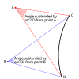

subtended_angle

Definition: In geometry, an angle is subtended by an arc, line segment or any other section of a curve when its two rays pass through the endpoints of that arc, line segment or curve section. Conversely, the arc, line segment or curve section confined within the rays of an angle is regarded as the corresponding subtension of that angle. We also sometimes say that an arc is intercepted or enclosed by that angle.
Source: Wikipedia
Wikipedia Page
Wikidata Page